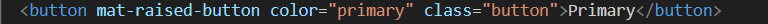
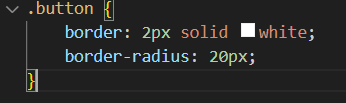

<div class="flex">
  <h1>Button Exemplo</h1>

  <div>
    <h3>Esse é o estilo padrão do primary button</h3>
    <button mat-raised-button color="primary">Primary</button>
  </div>
  <br />
  <div class="flex">
    <h3>Modificando as bordas do button</h3>
    <button mat-raised-button color="primary" class="button">Primary</button>
    <br />
    <span
      >Para esse exemplo não precisamos identificar as classes internas pois já
      temos acesso ao button que queremos estilizar.</span
    >
    <span
      >Atribuimos uma class ao button e definimos os estilos que queremos
      aplicar.</span
    >
    
    
  </div>
</div>
